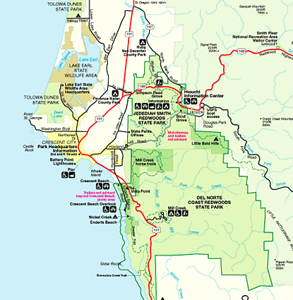

The Redwoods
Location and the Best Time to Visit

How to Visit:
US 101, with its many redwood sentinels, gives you a windshield-framed panorama of the trees. But to appreciate the redwoods, you must walk among them. If you have only a day to visit this 50-mile-long park, stop and see the Lady Bird Johnson Grove and Big Tree. Hike or just stretch your legs (depending on your time) along the Coastal Trail and savor the Pacific prospect of the park. For a longer stay, visit the Tall Trees Grove, drive Howland Hill Road, and end your visit with a splash in a kayak on the Klamath River or a jouncy drive to Fern Canyon and Gold Bluffs Beach. If you are driving an RV or towing a trailer, some stretches of road may be closed to you; check at information centers.
When to Go:
Year-round. Summer draws highway-clogging crowds, so think about a visit in spring or fall. In both seasons, bird migrations enhance the redwood groves. Rhododendrons burst forth in spring; deciduous trees add color in fall. Rains, welcome to the redwoods but not to visitors, drench the park in winter.
Select an image below for more information
https://www.nps.gov/redw/learn/management/centennial-initiative-2016.htm
https://www.nps.gov/planyourvisit/index.htm
{kind=link}